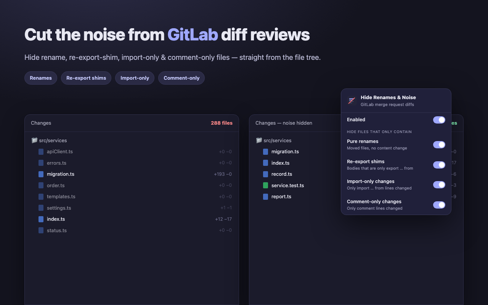
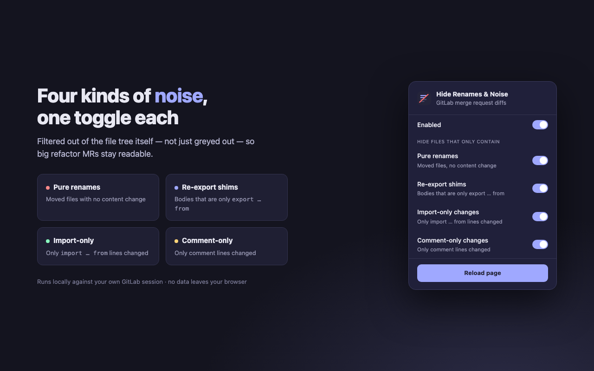

A Chrome extension that hides rename, re-export-shim, import-only and comment-only files on GitLab merge request diff pages — straight from the file tree.
export … from ….import … from ….

chrome://extensions → Developer mode → Load unpacked → the extension folder.Works on classic GitLab diff pages. The beta “Rapid Diffs” view is not supported. Currently scoped to gitlab.com.
No data is collected, transmitted, or shared — everything runs locally against your own GitLab session. See the privacy policy.